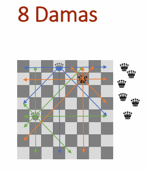

- Generated by
 1.9.8
1.9.8
|
TProcura
Biblioteca em C++ para testes paramétricos de algoritmos, e coleção de algoritmos de procura e otimização
|
Execução de exemplo com base no problema das 8 Damas. Pode acompanhar o teste executando as ações localmente.
No Visual Studio, selecione o projeto TProcuraConstrutiva, e execute. No Linux na pasta .../TProcura/Construtiva/Teste$ execute make seguido de ./bin/Release/TProcuraConstrutiva
Nota: ao executar no terminal, os parâmetros, indicadores e outros elementos, aparecem com realce de cor para facilitar a leitura.
┌─ Teste TProcuraConstrutiva ──┐
│ 1 - Aspirador │
│ 2 - Puzzle 8 │
│ 3 - 8 Damas │
│ 4 - Partição │
└──────────────────────────────┘
Opção: 3

Vamos entrar no problema das 8 damas. Introduza: 3.
8 Damas ┌─ ⚙ Parâmetros ────────────────────────────────────────────────────── │ P1(ALGORITMO): Largura Primeiro | P2(NIVEL_DEBUG): NADA | P3(SEMENTE): 1 │ P4(LIMITE_TEMPO): 10 | P5(LIMITE_ITERACOES): 0 | P6(VER_ACOES): 4 | P7(LIMITE): 0 │ P8(ESTADOS_REPETIDOS): ignorar | P11(BARALHAR_SUCESSORES): 0 └────────────────────────────────────────────────────────────────────── │ :: :: :: :: │ :: :: :: :: │ :: :: :: :: │ :: :: :: :: │ :: :: :: :: │ :: :: :: :: │ :: :: :: :: │ :: :: :: :: ┌─ ☰ Menu ─────────┬────────────────┬─────────────────────┬──────────────┐ │ 1 📄 Instância │ 2 🔍 Explorar │ 3 ⚙ Parâmetros │ 4 ✔ Solução │ │ 5 ⚖ Indicadores │ 6 ► Executar │ 7 🛠️ Configurações │ 8 🧪 Teste │ └───────────────────┴────────────────┴─────────────────────┴──────────────┘ Opção:
Este estado vazio é um tabuleiro de 8x8. O objetivo é colocar damas no tabuleiro de xadrez, sem que as damas se ataquem mutuamente.
Vamos ver que instâncias temos. Introduza: 1; 4.
Opção: 1 ┌─ 📄 Instância ─────────────────────────────────────────────────────── │ ID atual: 8 Intervalo: [4–40] │ Prefixo atual: 'instancia_' └────────────────────────────────────────────────────────────────────── Novo ID (ENTER mantém) ou novo prefixo (texto): 4 8 Damas ... :: :: :: :: :: :: :: :: ... Opção:
O tabuleiro foi generalizado a largura N. Podemos escolher entre 4 e 40 colunas.
Há várias formas de se colocar damas no tabuleiro. Está implementada a colocação de uma dama, na linha superior que não esteja atacada.
Poder-se-ia permitir a colocação de uma dama em qualquer posição. No entanto, como em cada linha tem de estar uma dama, optamos por colocar sempre na primeira linha vazia. Caso se tivessem implementado diferentes opções, seria adicionado um parâmetro, e os sucessores seria distinto conforme o valor desse parâmetro.
Vamos resolver esta instância manualmente, para explorar o espaço de estados. Introduza: 2; d1; d4; d2.
Opção: 2 ═╤═ 💰 g:0 ⚖ 1|4|5 ═══ │ :: :: │ :: :: │ :: :: │ :: :: │ └─ ⚡ ──── d1 d2 d3 d4 🔍 Sucessor [1-4, ação(ões), exe]: d1 ┌─ ✔ ──────────────── │ Executadas 1 ações. └───────────────────── ═╤═ 💰 g:0 ⚖ 3|10|8 ═══ │ ♛ :: │ :: :: │ :: :: │ :: :: │ └─ ⚡ ──── d3 d4 🔍 Sucessor [1-2, ação(ões), exe]: d4 ┌─ ✔ ──────────────── │ Executadas 1 ações. └───────────────────── ═╤═ 💰 g:0 ⚖ 5|13|10 ═══ │ ♛ :: │ :: ♛ │ :: :: │ :: :: │ └─ ⚡ ──── d2 🔍 Sucessor [1-1, ação(ões), exe]: d2 ┌─ ✔ ──────────────── │ Executadas 1 ações. └───────────────────── ═╤═ 💰 g:0 ⚖ 7|14|11 ═══ │ ♛ :: │ :: ♛ │ ::♛ :: │ :: :: │ └─ ⚡ ──── ┌─ ⛔ ─────────────── │ Sem sucessores. └──────────────────── 8 Damas ... │ ♛ :: │ :: ♛ │ ::♛ :: │ :: :: ... Opção:
Esta resolução correu mal e chegamos a um beco sem saida. Não há nenhuma coluna onde possa ser colocada a quarta dama sem que esteja atacada.
A escolha na primeira ação por d2 (ou d3), é crítica para obter a solução.
Neste problema a solução tem sempre o mesmo número de ações, igual a N.
Vamos fazer uma procura em largura, no tabuleiro de 4x4, debug completo. Vamos deixar desde já fixado o limite no número de iterações a 1000000. Introduza: 1; 4; 3; 2; 4; 5; 1000000; ENTER; 6.
Opção: 6 ═╤═ ► Execução iniciada ═══ ├■═╤═ 💰 g:0 ═══ { } │ :: :: │ :: :: │ :: :: │ :: :: │ └─ ⚡ ──── d1 d2 d3 d4 { 🔖 1 🔖 2 🔖 3 🔖 4 } ├■═╤═ 🔖 1 💰 g:1 ⚖ 1|4 ═══ { 🔖 2 🔖 3 🔖 4 } │ ♛ :: │ :: :: │ :: :: │ :: :: │ └─ ⚡ ──── d3 d4 { 🔖 5 🔖 6 } ├■═╤═ 🔖 2 💰 g:1 ⚖ 2|6 ═══ { 🔖 3 🔖 4 🔖 5 🔖 6 } │ ::♛ :: │ :: :: │ :: :: │ :: :: │ └─ ⚡ ──── d4 { 🔖 7 } ├■═╤═ 🔖 3 💰 g:1 ⚖ 3|7 ═══ { 🔖 4 🔖 5 🔖 6 🔖 7 } │ :: ♛ │ :: :: │ :: :: │ :: :: │ └─ ⚡ ──── d1 { 🔖 8 } ├■═╤═ 🔖 4 💰 g:1 ⚖ 4|8 ═══ { 🔖 5 🔖 6 🔖 7 🔖 8 } │ :: ::♛ │ :: :: │ :: :: │ :: :: │ └─ ⚡ ──── d1 d2 { 🔖 9 🔖 10 } ├■═╤═ 🔖 5 💰 g:2 ⚖ 5|10 ═══ { 🔖 6 🔖 7 🔖 8 🔖 9 🔖 10 } │ ♛ :: │ ::♛ :: │ :: :: │ :: :: │ └─ ⚡ ──── ├■═╤═ 🔖 6 💰 g:2 ⚖ 6|10 ═══ { 🔖 7 🔖 8 🔖 9 🔖 10 } │ ♛ :: │ :: ♛ │ :: :: │ :: :: │ └─ ⚡ ──── d2 { 🔖 11 } ├■═╤═ 🔖 7 💰 g:2 ⚖ 7|11 ═══ { 🔖 8 🔖 9 🔖 10 🔖 11 } │ ::♛ :: │ :: ♛ │ :: :: │ :: :: │ └─ ⚡ ──── d1 { 🔖 12 } ├■═╤═ 🔖 8 💰 g:2 ⚖ 8|12 ═══ { 🔖 9 🔖 10 🔖 11 🔖 12 } │ :: ♛ │ ♛ :: :: │ :: :: │ :: :: │ └─ ⚡ ──── d4 { 🔖 13 } ├■═╤═ 🔖 9 💰 g:2 ⚖ 9|13 ═══ { 🔖 10 🔖 11 🔖 12 🔖 13 } │ :: ::♛ │ ♛ :: :: │ :: :: │ :: :: │ └─ ⚡ ──── d3 { 🔖 14 } ├■═╤═ 🔖 10 💰 g:2 ⚖ 10|14 ═══ { 🔖 11 🔖 12 🔖 13 🔖 14 } │ :: ::♛ │ ♛ :: │ :: :: │ :: :: │ └─ ⚡ ──── ├■═╤═ 🔖 11 💰 g:3 ⚖ 11|14 ═══ { 🔖 12 🔖 13 🔖 14 } │ ♛ :: │ :: ♛ │ ::♛ :: │ :: :: │ └─ ⚡ ──── ├■═╤═ 🔖 12 💰 g:3 ⚖ 12|14 ═══ { 🔖 13 🔖 14 } │ ::♛ :: │ :: ♛ │ ♛ :: │ :: :: │ └─ ⚡ ──── d3 { 🔖 15 } │ 🎯 Solução encontrada! 💰 g:4 │ ::♛ :: │ :: ♛ │ ♛ :: │ ::♛ :: ├─ Parâmetros ─ P1=1 P2=4 P3=1 P4=10 P5=1000000 P6=4 P7=0 P8=1 P11=0 ═╧═ 🏁 Execução terminada ⏱ ═══ 8 Damas ┌─ ⚙ Parâmetros ────────────────────────────────────────────────────── │ P1(ALGORITMO): Largura Primeiro | P2(NIVEL_DEBUG): COMPLETO | P3(SEMENTE): 1 │ P4(LIMITE_TEMPO): 10 | P5(LIMITE_ITERACOES): 1000000 | P6(VER_ACOES): 4 │ P7(LIMITE): 0 | P8(ESTADOS_REPETIDOS): ignorar | P11(BARALHAR_SUCESSORES): 0 └────────────────────────────────────────────────────────────────────── ::♛ :: :: ♛ ♛ :: ::♛ :: ┌─ ⚖ Indicadores ───────────────────────────────────────────────────── │ I1(IND_CUSTO): 4 | I2(Tempo(ms)): 0 | I3(Iterações): 0 | I4(IND_EXPANSOES): 13 | │ I5(IND_GERACOES): 15 | I6(IND_LOWER_BOUND): 0 └────────────────────────────────────────────────────────────────────── ... Opção:
A solução foi encontrada. No entanto, o algoritmo explora todos os estados do nível 3 antes de ver o primeiro do nível 4. Neste problema, como a solução está no nível 4, acaba por não ser muito interessante esta procura. Qualquer estado no nível 4 seria uma solução, e foram expandidos todos os estados do nível 3. Não podia ser pior.
Não só este algoritmo gasta muito tempo nos níveis inferiores, a explorar completamente, como a procura em profundidade ilimitada não tem problema, já que não existem ciclos infinitos.
Vamos executar a mesma instância com a procura em profundidade ilimitada. Introduza: 1; 4; 3; 1; 3; 7; -1; ENTER; 6.
Opção: 6 ═╤═ ► Execução iniciada ═══ ├■═╤═ 💰 g:0 ═══ │ :: :: │ :: :: │ :: :: │ :: :: │ ├■═╤═ 🔖 1 💰 g:1 ⚖ 1|4 ═══ ⚡ d1 │ │ ♛ :: │ │ :: :: │ │ :: :: │ │ :: :: │ │ ├■═╤═ 🔖 5 💰 g:2 ⚖ 2|6 ═══ ⚡ d3 │ │ │ ♛ :: │ │ │ ::♛ :: │ │ │ :: :: │ │ │ :: :: │ │ │ 🍃 │ │ └■═╤═ 🔖 6 💰 g:2 ⚖ 3|6 ═══ ⚡ d4 │ │ ♛ :: │ │ :: ♛ │ │ :: :: │ │ :: :: │ │ └■═╤═ 🔖 7 💰 g:3 ⚖ 4|7 ═══ ⚡ d2 │ │ ♛ :: │ │ :: ♛ │ │ ::♛ :: │ │ :: :: │ │ 🍃 │ ├■═╤═ 🔖 2 💰 g:1 ⚖ 5|7 ═══ ⚡ d2 │ │ ::♛ :: │ │ :: :: │ │ :: :: │ │ :: :: │ │ └■═╤═ 🔖 8 💰 g:2 ⚖ 6|8 ═══ ⚡ d4 │ │ ::♛ :: │ │ :: ♛ │ │ :: :: │ │ :: :: │ │ └■═╤═ 🔖 9 💰 g:3 ⚖ 7|9 ═══ ⚡ d1 │ │ ::♛ :: │ │ :: ♛ │ │ ♛ :: │ │ :: :: │ │ └■═╤═ 🔖 10 💰 g:4 ⚖ 8|10 ═══ ⚡ d3 │ │ ::♛ :: │ │ :: ♛ │ │ ♛ :: │ │ ::♛ :: │ │ 🎯 Solução encontrada! 💰 g:4 │ │ │ ::♛ :: │ │ │ :: ♛ │ │ │ ♛ :: │ │ │ ::♛ :: │ │ │ 🎯 4 → 📈 │ └─ { 🔖 3 🔖 4 } ├─ Parâmetros ─ P1=3 P2=4 P3=1 P4=10 P5=1000000 P6=4 P7=-1 P8=1 P11=0 ═╧═ 🏁 Execução terminada ⏱ ═══ 8 Damas ┌─ ⚙ Parâmetros ────────────────────────────────────────────────────── │ P1(ALGORITMO): Profundidade Primeiro | P2(NIVEL_DEBUG): COMPLETO | P3(SEMENTE): 1 │ P4(LIMITE_TEMPO): 10 | P5(LIMITE_ITERACOES): 1000000 | P6(VER_ACOES): 4 │ P7(LIMITE): -1 | P8(ESTADOS_REPETIDOS): ignorar | P11(BARALHAR_SUCESSORES): 0 └────────────────────────────────────────────────────────────────────── ::♛ :: :: ♛ ♛ :: ::♛ :: ┌─ ⚖ Indicadores ───────────────────────────────────────────────────── │ I1(IND_CUSTO): 4 | I2(Tempo(ms)): 0 | I3(Iterações): 0 | I4(IND_EXPANSOES): 8 | │ I5(IND_GERACOES): 10 | I6(IND_LOWER_BOUND): 0 └────────────────────────────────────────────────────────────────────── ... Opção:
Podemos observar que o algoritmo em profundidade fez o mesmo erro que nós fizemos, foi escolher d1 na primeira ação. No entanto, após ver que não é possível, testa a opção de d2 e encontra a solução.
Notar que os nós folha foram atingidos por não haver sucessores na posição concreta, e não por nível da árvore de procura, já que o limite foi colocado a -1, ou seja, ilimitado.
No final da procura, ainda havia um ramo para analisar, com dois estados pendentes. Esses estados eram as ações d3 e d4 inicial, que são ações simétricas a d1 e d2. Como temos P8(ESTADOS_REPETIDOS): ignorar, estas ações são geradas.
Neste caso houve 8 expansões na procura em profundidade, contra 13 da procura em largura. Mas evidentemente que não será esta pequena instância que irá suportar as nossas conclusões. Temos um teste empírico na ação 6, com mais instâncias.
Na abordagem construtiva, atendendo a que este problema tem o número de ações fixas, se as ações tivessem custo variável, faria sentido uma heurística para estimar o custo até ao final. Sendo o custo fixo, apenas sabemos que se existir solução, a distância é conhecida e igual para todos os estados num determinado nível. Assim, não faz sentido construir uma heurítsica, nem ter procuras informadas com a abordagem construtiva.
Podemos sempre considerar a hipótese de ter uma heurística ignorando a admissibilidade, apenas para guiar a procura. No entanto neste problema não é claro que heurística possa ser.
Podemos ter no entanto outras opções que melhoram a abordagem construtiva. Uma das possibilidades é considerar ou não os estados repetidos. Neste problema temos 3 eixos de simetria. Significa que a mesma posição pode ao ser refletida em cada eixo, transformar-se numa das outras, num total de 8 posições simétricas. Ao anular as simetrias por normalização do estado, e remoção de repetidos, o espaço de estados reduz-se. As simetrias estão implementadas, pelo que vamos testar na próxima ação.
Outra possibilidade não implementada neste código, é a verificação se há linhas/colunas vazias, que estejam totalmente atacadas. Ao colocar duas ou três damas, estas podem cobrir a totalidade das casas da última linha, e essa linha só é analisada no último nível. Esta implementação causa também mais peso, mas invalida estados antecipadamente.
Nos testes empíricos vamos passar para a interface da linha de comando, por ser mais simples.
Vamos obter primeiramente a lista de todos os parâmetros.
/TProcura/Construtiva/Teste$ ./bin/Release/TProcuraConstrutiva -h ┌─ Teste TProcuraConstrutiva ──┐ │ 1 - Aspirador │ │ 2 - Puzzle 8 │ │ 3 - 8 Damas │ │ 4 - Partição │ │ 5 - Artificial │ └──────────────────────────────┘ Opção: 3 Uso: ./bin/Release/TProcuraConstrutiva[opções] Conjunto de IDs: A | A,B,C | A:B[:C] Opções: -R Nome do CSV de resultados (omissão: resultados.csv) -F Prefixo dos ficheiros de instância (omissão: instancia_) -M Modo MPI: 0 = divisão estática, 1 = gestor-trabalhador -I Lista de indicadores (e.g. 2,1,3) -h Esta ajuda -P Parâmetros (e.g. P1=1:3 x P2=0:2) - último campo Exemplo: ./bin/Release/TProcuraConstrutiva 1:5 -R out -F fich_ -I 3,1,4,2 -P P1=1:5 x P6=1,2 Executar sem argumentos entra em modo interativo, para explorar todos os parâmetros e indicadores ┌─ ⚙ Parâmetros ────────────────────────────────────────────────────── │ P1(ALGORITMO): Largura Primeiro (1 a 7) │ P2(NIVEL_DEBUG): NADA (0 a 4) │ P3(SEMENTE): 1 (1 a 1000000) │ P4(LIMITE_TEMPO): 10 (1 a 3600) │ P5(LIMITE_ITERACOES): 0 (0 a 1000000000) │ P6(VER_ACOES): 4 (1 a 100) │ P7(LIMITE): 0 (-1 a 1000000) │ P8(ESTADOS_REPETIDOS): ignorar (1 a 3) │ P11(BARALHAR_SUCESSORES): 0 (0 a 1) └────────────────────────────────────────────────────────────────────── ┌─ ⚖ Indicadores ───────────────────────────────────────────────────── │ I1(IND_CUSTO): ✓ 1º lugar │ o resultado é o custo da solução atual │ I2(Tempo(ms)): ✓ 2º lugar │ Tempo em milisegundos da execução (medida de esforço computacional). │ I3(Iterações): ✓ 3º lugar │ Iterações do algoritmo, intrepretadas conforme o algoritmo (medida de esforço independente do hardware). │ I4(IND_EXPANSOES): ✓ 4º lugar │ número de expansões efetuadas │ I5(IND_GERACOES): ✓ 5º lugar │ número de estados gerados │ I6(IND_LOWER_BOUND): ✓ 6º lugar │ valor mínimo para a melhor solução, se igual ao custo da solução obtida, então esta é ótima └──────────────────────────────────────────────────────────────────────
Atendendo a que o algoritmo em profundidade primeiro é o único que faz sentido, atendendo a que os algoritmos informados não fazem sentido utilizar dado que não existe heurística, vamos estudar uma das opções disponíveis nesta implementação. Nesse sentido temos P1=3 fixo.
Podemos ver se a remoção de estados repetidos ajuda ou prejudica, atendendo a que pode reduzir os estados analisados mas é também consumidora de tempo, pelo que fica em aberto P8=1,3. Não faz sentido os estados ascendentes dado que não há movimentos inversos.
Vamos também ver se baralhar os sucessores tem algum impacto nos resultados, face à ordem fixa dos sucessores, P11=0,1. No caso de P11=1, podemos utilizar várias sementes aleatórias, P3 a variar, caso P11=0, não faz sentido já que não temos utilização para os valores aleatórios, e as instâncias são sempre as mesmas.
Sobre a melhor configuração, procuraremos fazer um teste de performance final.
Vamos primeiramente fazer um teste, para verificar se os estados repetidos são benéficos. Como temos poucas instâncias, de 4 a 40, e o algoritmo não é aleatório, o esforço não pode ser aumentando demasiado, pelo que utilizamos dois níveis.
Colocamos P2=4 atendendo a que são poucas tarefas:
Opção: 3
═╤═ Instâncias ═══ { 📄 4 📄 8 📄 12 📄 16 📄 20 📄 24 📄 28 📄 32 📄 36 📄 40 }
├─ 🛠️ ─ P1=3 P2=4 P3=1 P4=10 P5=0 P6=4 P7=-1 P11=0 (parâmetros comuns)
═╪═ Configurações ═══
├─ ⚙ [1] ─ P8=1
├─ ⚙ [2] ─ P8=3
═╧═══════════════════
═╤═ 🧪 Início do Teste (🖥️ 0) ═══
├─ 📋 Tarefas:20 📄 Instâncias: 10 🛠️ Configurações: 2 🖥️ Processos: 1.
├─ ⏱ 📋 1 📄 4 🛠️ 1 🖥️ 1 🎯 4 ⚖ 4 0 0 8 10 0
├─ ⏱ 📋 2 📄 8 🛠️ 1 🖥️ 1 🎯 8 ⚖ 8 0 0 113 124 0
├─ ⏱ 📋 3 📄 12 🛠️ 1 🖥️ 1 🎯 12 ⚖ 12 0 0 261 295 0
├─ ⏱ 📋 4 📄 16 🛠️ 1 🖥️ 1 🎯 16 ⚖ 16 8 0 10052 10112 0
├─ ⏱ 8ms 📋 5 📄 20 🛠️ 1 🖥️ 1 🎯 20 ⚖ 20 142 0 199635 199733 0
├─ ⏱ 150ms 📋 6 📄 24 🛠️ 1 🖥️ 1 🎯 24 ⚖ 24 348 0 411608 411755 0
├─ ⏱ 498ms 📋 7 📄 28 🛠️ 1 🖥️ 1 🎯 28 ⚖ 28 2931 0 3006298 3006508 0
├─ ⏱ 3" 429ms 📋 8 📄 32 🛠️ 1 🖥️ 1 🚫 ⏱ ⚖ -2 10000 0 8723766 8724049 0
├─ ⏱ 13" 429ms 📋 9 📄 36 🛠️ 1 🖥️ 1 🚫 ⏱ ⚖ -2 10000 0 7550046 7550403 0
├─ ⏱ 23" 429ms 📋 10 📄 40 🛠️ 1 🖥️ 1 🚫 ⏱ ⚖ -2 10000 0 6476857 6477321 0
├─ ⏱ 33" 430ms 📋 11 📄 4 🛠️ 2 🖥️ 1 🎯 4 ⚖ 4 38 0 8 8 0
├─ ⏱ 33" 467ms 📋 12 📄 8 🛠️ 2 🖥️ 1 🎯 8 ⚖ 8 7 0 113 120 0
├─ ⏱ 33" 475ms 📋 13 📄 12 🛠️ 2 🖥️ 1 🎯 12 ⚖ 12 8 0 261 289 0
├─ ⏱ 33" 483ms 📋 14 📄 16 🛠️ 2 🖥️ 1 🎯 16 ⚖ 16 19 0 2850 2896 0
├─ ⏱ 33" 502ms 📋 15 📄 20 🛠️ 2 🖥️ 1 🎯 20 ⚖ 20 302 0 112596 112672 0
├─ ⏱ 33" 804ms 📋 16 📄 24 🛠️ 2 🖥️ 1 🎯 24 ⚖ 24 1800 0 534849 534950 0
├─ ⏱ 35" 604ms 📋 17 📄 28 🛠️ 2 🖥️ 1 🚫 ⏱ ⚖ -2 10005 0 2223083 2223228 0
├─ ⏱ 45" 608ms 📋 18 📄 32 🛠️ 2 🖥️ 1 🚫 ⏱ ⚖ -2 10004 0 1531492 1531650 0
├─ ⏱ 55" 612ms 📋 19 📄 36 🛠️ 2 🖥️ 1 🚫 ⏱ ⚖ -2 10004 0 1215677 1215871 0
├─ ⏱ 1' 5" 617ms 📋 20 📄 40 🛠️ 2 🖥️ 1 🚫 ⏱ ⚖ -2 10006 0 1081955 1082181 0
├─ 📑 Ficheiro Resultados/8damas_1.csv gravado.
│ ⏱ Tempo real: 1' 15" 623ms
│ ⏱ CPU total: 1' 15" 623ms
│ 📊 Utilização: 100.0%
═╧═ 🏁 Fim do Teste (🖥️ 0 ⏱ 1' 15" 623ms ) ═══
As 20 tarefas foram realizadas em pouco mais de 1 minuto, existindo instâncias não resolvidas por causa do limite de tempo.
O output detalhado revela já que a configuração 1 resolve mais uma instância que a configuração 2.
Vamos ver os resultados:
Podemos ver a tabela com os resultados:
| Rótulos de Linha | 1:ignorar | 3:gerados |
|---|---|---|
| 4 | 0 | 38 |
| 8 | 0 | 7 |
| 12 | 0 | 8 |
| 16 | 8 | 19 |
| 20 | 142 | 302 |
| 24 | 348 | 1800 |
| 28 | 2931 | 10005 |
| 32 | 10000 | 10004 |
| 36 | 10000 | 10004 |
| 40 | 10000 | 10006 |
| Total Geral | 33429 | 42193 |
Esta análise aparenta não ser de todo compensador o uso dos estados gerados. No ponto de transição, a instância 28 conseguiu ainda ser resolvida sem estados gerados, mas não com estados gerados. Os tempos aparentam ser sempre superiores com estados gerados.
Poder-se-ia fazer várias execuções para ter vários valores de tempo para as mesmas instâncis, para poder utilizar intervalos de confiança. Em todo o caso as diferenças são bastantes, e a não ser que se possa optimizar o algoritmo para normalizar o estado e verificar se é igual, com os tempos atuais, não aparenta trazer qualquer vantagem.
A versão com maior esforço, poderá dar com maior precisão o ponto de transição, entre instâncias simples para complexas.
Vamos agora verificar se baralhar os sucessores influencia ou não o algoritmo. A ordem atual é a ordem de geração, que poderia ser trocada facilmente, caso exista alguma informação heurística nesse sentido, embora sem ser no contexto do Astar, com uma estimativa até à solução ótima, já que essa estimativa é conhecida. A existir uma heurística será para ordenar os sucessores por ordem de probabilidade de conter a solução ótima. Se tal for útil, a ordem aleatória poderá ter impacto na performance, e é isso que se pretende obter neste teste.
Vamos utilizar o aleatório em 4 corridas, atendendo a que os sucessores são baralhados.
Reduzimos o debug para 3, atendendo a que há 80 tarefas.
Opção: 3
═╤═ Instâncias ═══ { 📄 4 📄 8 📄 12 📄 16 📄 20 📄 24 📄 28 📄 32 📄 36 📄 40 }
├─ 🛠️ ─ P1=3 P2=3 P4=10 P5=0 P6=4 P7=-1 P8=1 (parâmetros comuns)
═╪═ Configurações ═══
├─ ⚙ [1] ─ P3=1 P11=0
├─ ⚙ [2] ─ P3=1 P11=1
├─ ⚙ [3] ─ P3=2 P11=0
├─ ⚙ [4] ─ P3=2 P11=1
├─ ⚙ [5] ─ P3=3 P11=0
├─ ⚙ [6] ─ P3=3 P11=1
├─ ⚙ [7] ─ P3=4 P11=0
├─ ⚙ [8] ─ P3=4 P11=1
═╧═══════════════════
═╤═ 🧪 Início do Teste (🖥️ 0) ═══
├─ 📋 Tarefas:80 📄 Instâncias: 10 🛠️ Configurações: 8 🖥️ Processos: 1.
├─ ⏱ 13" 536ms 📋 9 📄 36 🛠️ 1 🖥️ 1
├─ ⏱ 23" 536ms 📋 10 📄 40 🛠️ 1 🖥️ 1
├─ ⏱ 33" 536ms 📋 11 📄 4 🛠️ 2 🖥️ 1
├─ ⏱ 47" 343ms 📋 29 📄 36 🛠️ 3 🖥️ 1
├─ ⏱ 57" 343ms 📋 30 📄 40 🛠️ 3 🖥️ 1
├─ ⏱ 1' 7" 344ms 📋 31 📄 4 🛠️ 4 🖥️ 1
├─ ⏱ 1' 21" 166ms 📋 49 📄 36 🛠️ 5 🖥️ 1
├─ ⏱ 1' 31" 167ms 📋 50 📄 40 🛠️ 5 🖥️ 1
├─ ⏱ 1' 41" 167ms 📋 51 📄 4 🛠️ 6 🖥️ 1
├─ ⏱ 1' 54" 622ms 📋 69 📄 36 🛠️ 7 🖥️ 1
├─ ⏱ 2' 4" 622ms 📋 70 📄 40 🛠️ 7 🖥️ 1
├─ ⏱ 2' 14" 622ms 📋 71 📄 4 🛠️ 8 🖥️ 1
├─ 📑 Ficheiro Resultados/8damas_2.csv gravado.
│ ⏱ Tempo real: 2' 14" 625ms
│ ⏱ CPU total: 2' 14" 625ms
│ 📊 Utilização: 100.0%
═╧═ 🏁 Fim do Teste (🖥️ 0 ⏱ 2' 14" 625ms ) ═══
Vamos ver os resultados de forma idêntica, mas utilizando médias atendedo a que temos 4 corridas para cada célula:
Vamos ver os resultados, são surpreendentes:
| Rótulos de Linha | 0 | 1 |
|---|---|---|
| 4 | 0 | 0 |
| 8 | 0 | 0 |
| 12 | 0 | 0 |
| 16 | 7 | 0 |
| 20 | 151 | 0,25 |
| 24 | 372 | 0,5 |
| 28 | 3119,5 | 0,5 |
| 32 | 10000,25 | 1,25 |
| 36 | 10000 | 0,25 |
| 40 | 10000 | 2,25 |
| Total Geral | 3364,975 | 0,5 |
A utilização de sucessores aleatórios resolve por completo todas as instâncias. Qualquer uma das 4 ordens aleatórias resolveu todas as instâncias. Significa portanto que a ordem fixa inicial, gera uma árvore de procura mais complexa, que uma ordem aleatória dos sucessores, sendo responsável pela complexidade do problema.
Assim sendo, as instâncias atuais até 40, são muito simples para uma configuração com ordem aleatória de sucessores.
Vamos fazer um teste de performance final, com todas as instâncias, de modo a medir o aumento do tempo face ao tamanho da instância. Fazemos 10 execuções por instância para poder aferir a variabilidade dos resultados.
Opção: 3
═╤═ Instâncias ═══ { 📄 4 📄 5 📄 6 … 📄 38 📄 39 📄 40 } #37
├─ 🛠️ ─ P1=3 P2=3 P4=10 P5=0 P6=4 P7=-1 P8=1 P11=1 (parâmetros comuns)
═╪═ Configurações ═══
├─ ⚙ [1] ─ P3=1
├─ ⚙ [2] ─ P3=2
├─ ⚙ [3] ─ P3=3
├─ ⚙ [4] ─ P3=4
├─ ⚙ [5] ─ P3=5
├─ ⚙ [6] ─ P3=6
├─ ⚙ [7] ─ P3=7
├─ ⚙ [8] ─ P3=8
├─ ⚙ [9] ─ P3=9
├─ ⚙ [10] ─ P3=10
═╧═══════════════════
═╤═ 🧪 Início do Teste (🖥️ 0) ═══
├─ 📋 Tarefas:370 📄 Instâncias: 37 🛠️ Configurações: 10 🖥️ Processos: 1.
├─ 📑 Ficheiro Resultados/8damas_3.csv gravado.
│ ⏱ Tempo real: 741ms
│ ⏱ CPU total: 741ms
│ 📊 Utilização: 100.0%
═╧═ 🏁 Fim do Teste (🖥️ 0 ⏱ 741ms ) ═══
Vamos ver os resultados:
| Rótulos de Linha | Mínimo de I2(Tempo(ms)) | Média de I2(Tempo(ms)) | Máximo de I2(Tempo(ms)) |
|---|---|---|---|
| 4 | 0 | 0 | 0 |
| 5 | 0 | 0 | 0 |
| 6 | 0 | 0 | 0 |
| 7 | 0 | 0 | 0 |
| 8 | 0 | 0 | 0 |
| 9 | 0 | 0 | 0 |
| 10 | 0 | 0 | 0 |
| 11 | 0 | 0,1 | 1 |
| 12 | 0 | 0 | 0 |
| 13 | 0 | 0 | 0 |
| 14 | 0 | 0 | 0 |
| 15 | 0 | 0 | 0 |
| 16 | 0 | 0 | 0 |
| 17 | 0 | 0,1 | 1 |
| 18 | 0 | 0,3 | 2 |
| 19 | 0 | 0,2 | 2 |
| 20 | 0 | 0,1 | 1 |
| 21 | 0 | 0,3 | 2 |
| 22 | 0 | 0,1 | 1 |
| 23 | 0 | 0,2 | 1 |
| 24 | 0 | 0,4 | 1 |
| 25 | 0 | 0,2 | 2 |
| 26 | 0 | 0,2 | 1 |
| 27 | 0 | 0,4 | 2 |
| 28 | 0 | 1,4 | 10 |
| 29 | 0 | 0,5 | 2 |
| 30 | 0 | 1,9 | 10 |
| 31 | 0 | 1,2 | 9 |
| 32 | 0 | 0,8 | 6 |
| 33 | 0 | 11,1 | 63 |
| 34 | 0 | 1,2 | 7 |
| 35 | 0 | 3 | 12 |
| 36 | 0 | 0,6 | 2 |
| 37 | 0 | 26,6 | 158 |
| 38 | 0 | 1,9 | 6 |
| 39 | 0 | 17,2 | 160 |
| 40 | 0 | 1,3 | 7 |
Podemos ver que até 40 o tempo é sempre muito baixo. Houve algumas instâncias a levarem 0.16 segundos, mas mesmo essas foram porque tivaram azar na ordem dos sucessores, outras ordens resolveram a instância menos de 1 milisegundo. Aparentam ser as instâncias ímpar as que podem ter um tempo máximo por vezes superior.
A vantagem dos testes paramétricos permitiu identificar um ponto crítico não identificado inicialmente. A ordem dos sucessores é crítica, mas não é necessário para instâncias deste tamanho, a construção de uma heurística para as ordenar. A ordem aleatória é suficiente, juntamente com um algoritmo cego em produnfidade ilimitada.
Caso o tamanho das instâncias aumente, a heurística que leve a resoluções mais rápidas, poderia ser uma mais valia.
Naturalmente que se poderiam fazer melhorias na implementação, para além de uma heurística. Pode-se implementar testes que permitam podar a árvore de forma a que não elimine soluções. Existindo um teste para verificar se a solução parcial pode ou não ser completa, caso falhe, o ramo pode ser cortado. Um desses casos é verificar se há linhas/colunas, não forçosamente a próxima linha a ser processada, sem damas mas já totalmente atacada. Uma solução parcial deste tipo, não pode ser convertida numa solução completa, pelo que não é necessário gerar sucessores. Esta otimização poderia ser colocada em parâmetro, e verificar também se compensa o tempo de ser executada.